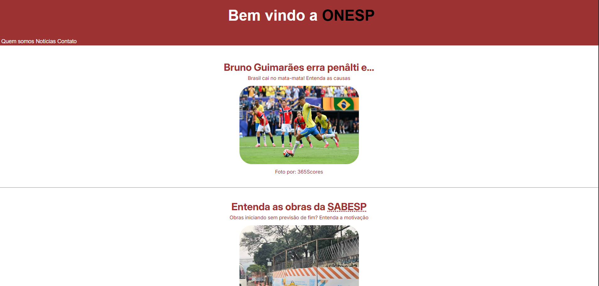

A ONESP surgiu como uma ideia de um estudante curioso, o nome desse estudante? Murilo Meneguelli. E então Murilo foi lá e fez! surgiu apenas como um motivo de testar seus conhecimentos em HTML e CSS. E aqui estou eu...Quero dizer - e aqui está o programador desenvolvendo o projeto com 100% de dedicação e esforço.
